Updates daily at 11AM Sydney time
Progression of the COVID outbreak in New South Wales
New: Progression of the COVID outbreak in New Zealand
New: Progression of the COVID outbreak in Victoria
New: Progression of the COVID outbreak in the Australian Capital Territory
See also: Australian vaccination rollout
See also: The road to a COVID-free Victoria (old 2020 second wave plots)
Contents
Reff estimate from all cases
New South Wales is currently experiencing an outbreak of COVID, due to the delta variant. On June 26th, after a concerning increase in case numbers, the Greater Sydney area was placed under lockdown restrictions, and other restrictions were imposed in regional New South Wales.
How have New South Wales' restrictions affected the spread of the virus? The below plot shows how the effective reproduction number of the virus, Reff has changed over time in New South Wales, as well as how the daily cases have changed over time. A trendline shows the approximate trajectory daily case numbers would follow, were the reproduction number of the virus to remain at its current level.
The same plot is shown twice, the first with cases on a linear scale, and the second on a log scale—the latter showing how consistently the caseload has followed exponential growth (which forms a straight line on a log scale).
 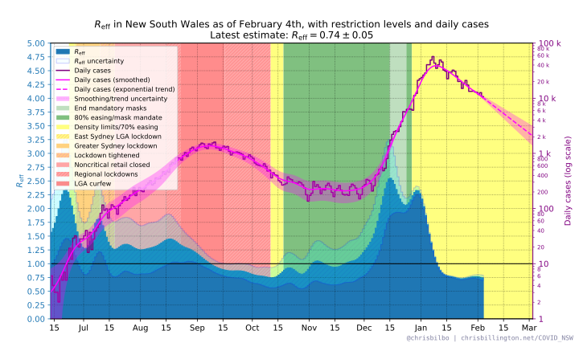
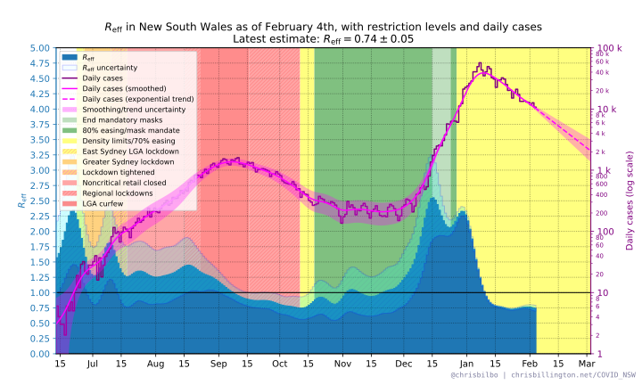
Projected effect of vaccine rollout
The trendline in the above plot simply projects forward case numbers assuming that Reff remains at its current estimated value. What about the effect of vaccines? Below is a plot with the projected trend taking into account an estimated reduction of spread due to vaccination levels increasing in New South Wales through the remainder of the year. This projection is a stochastic SIR model, and thus also takes into account immunity due to infections, which would decrease transmission once a non-neglibible fraction of the population has been infected.
The rate of vaccination assumed in the model is 1.4 doses per 100 population per day in August, 1.6 doses per 100 population per day in September, and 1.8 doses per 100 population per day from October onward, up to a maximum of 85% of the population. See below for plots of how these assumed rates compare to the vaccination rollout in New South Wales so far. The vaccines are assumed to reduce Reff by 40% per dose per capita—that is, overall spread is reduced by 40% for a partly-vaccinated individual and 80% for a fully vaccinated individual.
This projection shows what might be possible if all other factors affecting Reff—such as restrictions—are held constant. If New South Wales eases restrictions, however, then Reff will likely increase and the effect of vaccines in reducing spread will be delayed compared to this projection.
The same plot is shown twice, the first with cases on a linear scale, and the second on a log scale.


Below are plots of the vaccination rollout in New South Wales to date, in terms of daily and cumulative doses per 100 population, with the assumed future rate used for the above projections also shown.
Animated projections over time
How have the above projections changed over time? Below are animated versions of the above projection, one with cases on a linear scale, and one with cases on a log scale, run on old data to show how the projections have changed over time. Note that these are not 100% identical to the projections actually made on previous days, as there have been some slight methodology changes - but they should be very close.Reff in the Hunter, Illawarra, and Western NSW regions
At time of writing, the Hunter region, Illawarra region, and Western New South Wales have notable growth in cases, even though cases are declining elsewhere in New South Wales. Below are plots showing an estimate of Reff in each region, as well as case numbers and a trendine on a log scale.


Reff in LGAs of concern vs rest of NSW
Below are two plots showing case numbers and an estimated Reff value in the eleven local government areas designated "of concern", and the rest of New South Wales excluding these eleven LGAs. Penrith as a whole is included as an LGA of concern, even though only some suburbs of Penrith are designated as such.
The data in this plot may be several days out of date due to the delay in New South Wales Health releasing data.
Note: case numbers on these plots are shown on a log scale.
 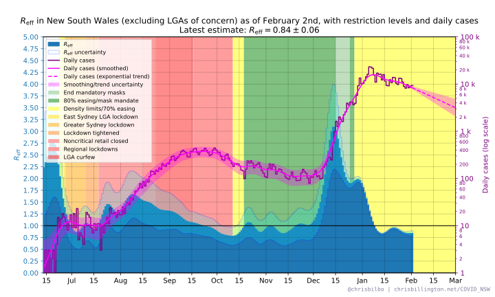
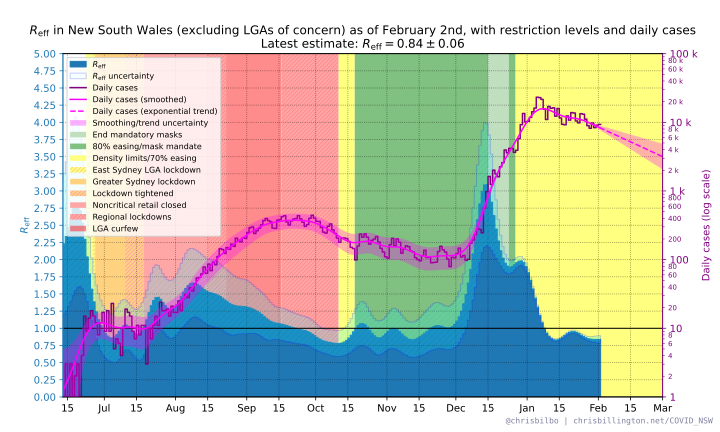
Projected effect of vaccines with LGAs of concern treated separately
The above projection of the effect of the vaccine rollout in New South Wales is very simplistic. Because it treats the entire state as a single outbreak with a single Reff, it can't accurately describe the substantially different rate of spread within the LGAs of concern, compared to the rest of New South Wales. In reality, the outbreaks in these two different settings have different Reff values and may peak at different times. Below is a projection that treats the two outbreaks separately, projecting each forward based in its current Reff and the same vaccination model, and then adds the results together to show a projection of statewide case numbers. The result should be more realistic than treating the entire state as a single outbreak. This projection does, however, still use statewide vaccination numbers, and would be improved if that were further broken down by LGA (It's on my todo list!).
Note that the data used for this projection lags the statewide numbers by up to several days due to the delay in New South Wales Health publishing LGA breakdowns.
The same plot is shown twice, first with cases on a linear scale, then with cases on a log scale. Below that, the two individual projections for the outbreak within the LGAs of concern, and in the rest of NSW are shown, also on a linear and log scale each.
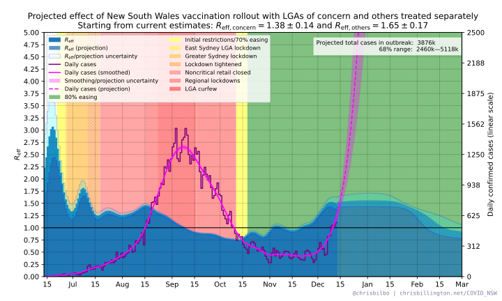 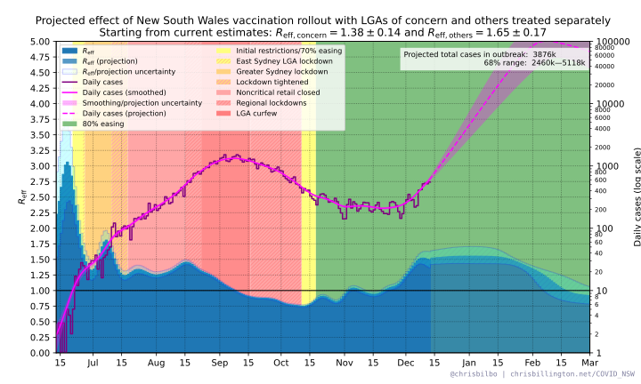 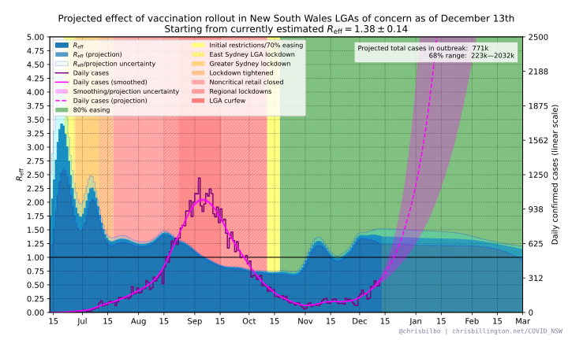 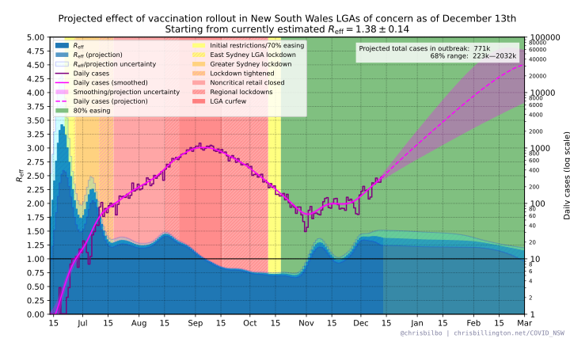 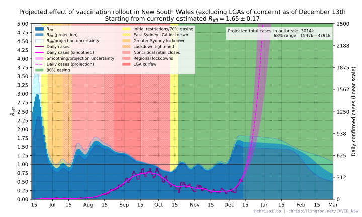 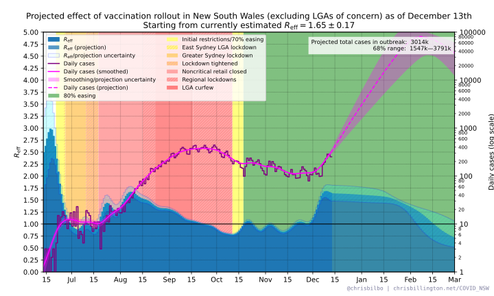Reff in individual LGAs of concern
Below are plots of daily case numbers and estimated Reff values in the eleven New South Wales local government areas that have been designated "LGAs of concern" by the New South Wales government, and are subject to additional restrictions. They are sorted by number of cases in the last fourteen days. Penrith as a whole is included, even though only some suburbs of Penrith are designated "of concern".
The data in these plots may be several days out of date due to the delay in New South Wales Health releasing data.
Note: case numbers on these plots are shown on a log scale.


 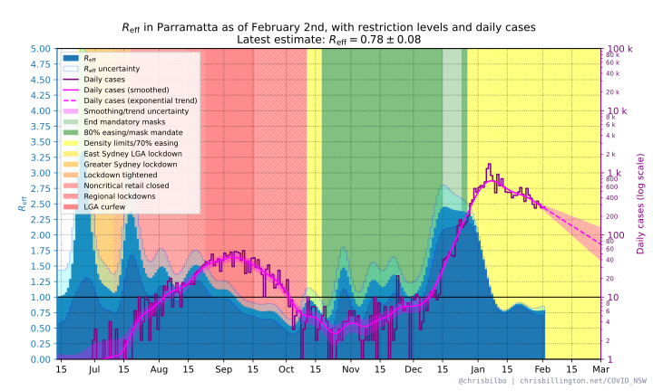
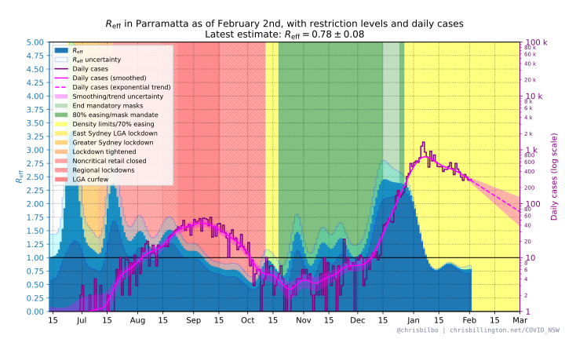
 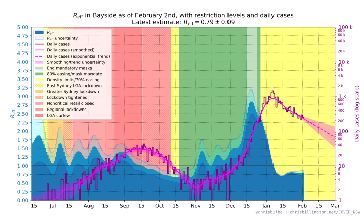
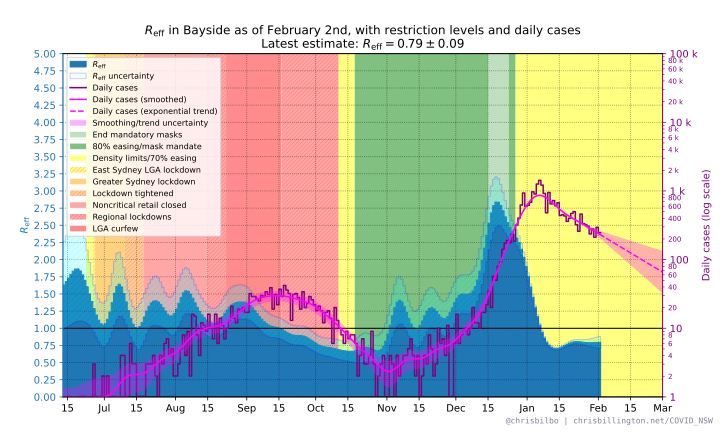
 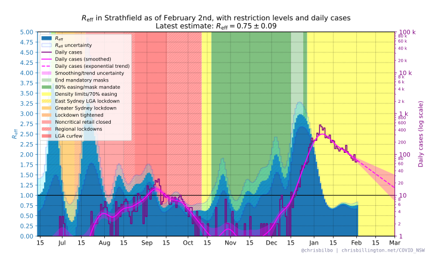
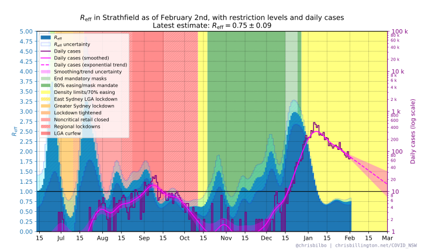

Disclaimer on trends
The plotted trendlines are simple extrapolations of what will happen if Reff remains at its current value. This does not take into account that things are in a state of flux. As restrictions take effect, the virus should have fewer opportunities for spread, and Reff will decrease. If restrictions are eased, it may increase. Contact tracing may suppress spread to a greater or lesser degree over time. The above plots specifically showing the effect of vaccines do take into account a reduction in Reff as vaccination coverage increases, but ignore any other possible future changes in Reff.
Furthermore, when case numbers are small, the random chance of how many people each infected person subsequently infects can cause estimates of Reff to vary randomly in time. As such the projection should be taken with a grain of salt—it is merely an indication of the trend as it is right now.
Methodology
Smoothing, calculating Reff and projections
Daily case numbers have been smoothed with 4-day Gaussian smoothing:
Nsmoothed(t) = N(t) ∗
(2πTs2)-1/2 exp(-t2 /
2Ts2)
where Ts = 4 days
and ∗ is the convolution operation.
Before smoothing, the daily case numbers are padded on the right with an extrapolation based on a exponential fit to the most recent 14 days of data.
Reff is then calculated for each day as:
Reff(ti) = (Nsmoothed(ti) / Nsmoothed(ti-1))Tg
where Tg = 5 days is the approximate generation time of the virus.
The uncertainty in Reff has contributions from the uncertainty in the above-mentioned exponential fit, as well as uncertainty in daily case numbers. The latter is considered to be Poisson noise scaled by a constant, chosen so as to make the reduced chi squared between raw and smoothed daily case numbers equal to 1.0.
The extrapolation of daily case numbers is based on exponential growth/decay using
the most recent value of Reff and its uncertainty range:
Nextrap(ti) = Nsmoothed(ttoday) Reff(ttoday)
(ti - ttoday)/Tg
Vaccination model
Note 2021-07-30: I have changed the model used for the projections of the vaccine rollout to a stochastic SIR model, and the description below is out of date. I haven't yet documented the new model on this page, but the code can be seen here in the meantime. The projected outcomes with the new model are very similar to the old model, which was valid in the limit of infections only reaching a small fraction of the total population.
To model vaccines taking effect after a delay, daily vaccine dose numbers
V(t) are convolved with a Gaussian offset 1.5
weeks in the future, with standard deviation 0.5 weeks:
Veffective(t) = V(t) ∗
(2πσ2)-1/2 exp(-(t - μ)2 /
2σ2)
where μ = 10.5 days, σ = 3.5 days, and ∗ is the convolution
operation. This causes the effect of a vaccine dose to over the course of the
second week after it is adminsitered, reaching nearly full effectiveness
approximately two weeks after administration.
I assume that one dose of any vaccine reduces spread by 40%, and two doses reduce
spread by 80%. The proportion of the population susceptible to the virus is then:
s(ti) = 1 - 0.4 × D(ti)
where D(ti) is the cumulative number of doses per
capita on each day.
Reff is then estimated for any future date as:
Reff(ti) =
Reff(ttoday)
× s(ti) / s(ttoday)
And case numbers extrapolated from one day to the next, beginning with
Nsmoothed(ttoday), according to:
Nextrap(ti) = Nextrap(ti-1) Reff(ti)
1/Tg
Data sources and contact
Source for case numbers: covidlive.com.au and NSW Health
Plots/analysis by Chris Billington. Contact: chrisjbillington [at] gmail [dot] com
Python script for producing the plots can be found at GitHub.